Weitere Datenübertragung Ihres Webseitenbesuchs an Google durch ein Opt-Out-Cookie stoppen - Klick!
Stop transferring your visit data to Google by a Opt-Out-Cookie - click!: Stop Google Analytics
Cookie Info. Datenschutzerklärung

 Altbau und Denkmalpflege Informationen - Startseite / Impressum
Altbau und Denkmalpflege Informationen - Startseite / Impressum
Inhaltsverzeichnis - Sitemap - über 1.500 Druckseiten unabhängige Bauinformationen
Die härtesten Bücher gegen den Klimabetrug - Kurz + deftig rezensiert +++
Bau- und Fachwerkbücher - Knapp + (teils) kritisch rezensiert
EnEV-Befreiung gem. § 25 (17 alt)! +++
Fragen? ++ Alles auf CD +++
27.10.06: DER SPIEGEL: Energiepass: Zu Tode gedämmte Häuser
Kostengünstiges Instandsetzen von Burgen, Schlössern, Herrenhäusern, Villen - Ratgeber zu Kauf, Finanzierung, Planung (PDF eBook)
Altbauten kostengünstig sanieren -
Heiße Tipps gegen Sanierpfusch im bestimmt frechsten Baubuch aller Zeiten (PDF eBook + Druckversion)
Der Schwindel mit der Wärmedämmung- Kapitel 1
2 3 4 5
6 7 8 9
10 11 12 13
14 15 16

Die Temperierung der Gebäude-Hüllflächen 3
Temperierung Start - Kapitel 1 - Referenzschreiben eines Lesers zum Temperiereffekt
2 - Seit wann gibt es Temperierung? / Die Sauerei mit der Kirchenheizung
3 - Richtig oder falsch Heizen in der Kirche - Orgeln, Holz, Feuchte, Kondensat und Kirchenheizung
4 - Strahlungsgeschichtliches 5 - Der Umschwung pro Temperierung
6 - Wie funktioniert Temperierung? / Wirkprinzip Wärmestrahlung / Trocknungseffekt / Wärmeverlust: Konvektion kontra Strahlung
7 - Sachverständigengutachten über die Mängel der Temperieranlage (Auszug) / Gesetzgeber zur Anwendung EnEV bei Strahlungsheizung - Auslegungsfragen
8 - Energieverluste? Zur Dämmung temperierter Wände / Neon-Analogon
9 - Feuchte und Temperatur an der Wand
10 - Schwedenofen, Kachelofen, Lüftungsanlage + Klimaanlage - Vorhof zur Hülle?
11 - Temperiererfolg gegen feuchte Wände und nasse Mauern / Trockenlegung
12 - Großraum, Schloß, Kirche, Saal: Übliche Fehleinschätzungen und Kaputtsanierung
13 - Temperieren im Großraum - Kirche, Saal und Halle
14 - Temperierung und Hygiene
15 - Bauteilkorrosion als Folge des Warmluftstroms - Wartungsintervalle und Heiztechnik
16 - Temperierung mittels Rohr oder Kleinkonvektor/Sockelleiste/Heizleiste/Fußleistenheizung
17 - Projektbeispiele / Schloß Veitshöchheim
18 - Einbau von Temperieranlagen - Technische Hinweise
19 - Konfiguration und Bemessung der Temperieranlage
20 - Strahlungsheizung und Fensterkonstruktion
21 - Prof. Dr. Claus Meier: Glas und die elektromagnetische Strahlung / Die Tragödie der Strahlung in der Heiztechnik - Humane Strahlungswärme
22 - VDI-Richtlinien, DIN-Norm und falsche Prüfberichte
23 - Energieerzeugung und Wirtschaftlichkeit - Probleme der Ökoenergieen
24 - Erhaltung und/oder Umbau bestehender Heizsysteme / EnEV-Befreiung gem. § 25, Nachtabsenkung, Glas+Strahlung, Brennwert-Technik
25 - Bauwerkstrocknung nach Überschwemmungs- und sonstigen Durchfeuchtungsschäden / Weitere Informationen
3 - Richtig oder falsch Heizen in der Kirche -
Orgeln, Holz, Feuchte, Kondensat und Kirchenheizung
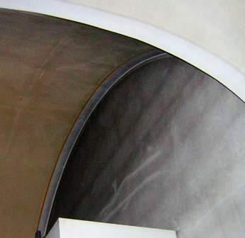
Wenn es so staubverschmutzt aussieht hinter der Orgel an der Giebelwand der Orgelempore - man sieht sogar die Fugen des
Leichtmauerwerks aus porosierten "Ziegeln" sich naßdunkel abzeichnen, wie mag es da nur der Königin der
Instrumente - der Kirchenorgel - ergehen?
Hier ein weiterer Einblick in die Problematik des Kirchenraums (aus meiner Praxis, frei nach Vielschelm Pfusch):
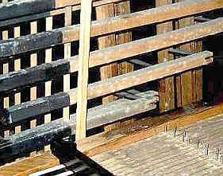
Von dem Kirchturm bimmelts so bang,
im Orgelinnern schimmelts schon lang
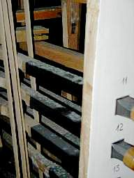
Weißer Schimmel soll nicht sein,
schwarzer wäre auch nicht fein
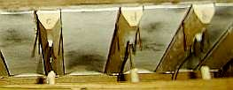
Denn der wächst auf Ziegenhaut
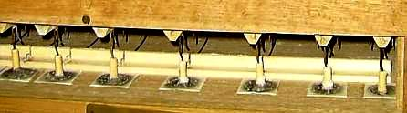
überall, wohin mer schaut.
Macht nix, sagt manch schlauer Mann,
weil man so mehr restaurieren und stimmen kann?
Ist's wirklich und warum gottbefohlen,
daß Raumklimakatastrophen drohen?
Und ist's ehrlich allerbest,
weil Überfeuchte lang schon näßt?
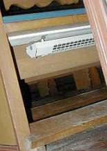
Schaun mer nach dem Heizsystem,
sitzt mer warm und schwitzt bequem
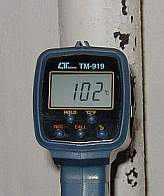
Oder Heizdampf pfeift im Rohr
lauter als der Kirchenchor
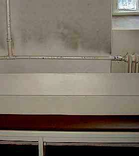
Heißer Schwelstaub an der Wand
ist bekannt im ganzen Land
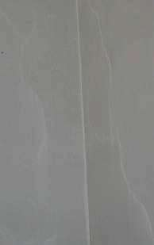
Weiße Schatten ohne Ruß,
weil der Dreck nach oben muß
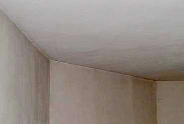
Weiße Kanten, darum graus -
Heißluftstrom spart's Ixel aus
Hierzu lehrt die Baupfuisick, kalte Kant wär Wärmebrück!
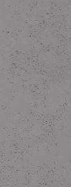
Auf den Wänden punktgenau,
wächst etwas - schwarzweißgrünblau
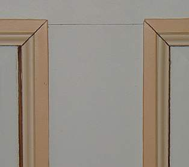
Und die Holzvertäflung schrumpft,
weil zu wenig eingesumpft?
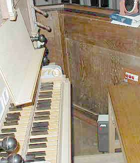
Heizluft konvektiert im Raum,
der Orgeltreter merkt es kaum
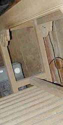
Darum heizt auch er sich ein,
ein Gebläse schafft das fein
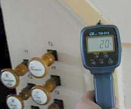
.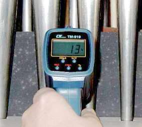
In der Raumluft 20 Grad,
nur 13 im Gehäuse - schad!
Jedoch für den Schimmel nicht,
weils ihm an Kondens nie gebricht.
Zappenduster ists da drin
die lichte Sonn´ wärmt da nie hin.
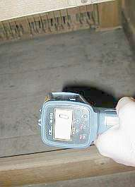
Oder Luft mit 5 - und andersrum:
Die Orgel im Frostdelirium!
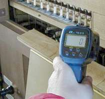
Überm Notenpult: jeder Stoß aus der Nas,
macht gewiß die erkältete Orgel naß.
Doch umgekehrt - das ist schon dumm,
bringen Sporen den Organisten um.
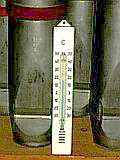
Die Messenluft oft warm und schwül,
das dunkle Orgelwerk mehr kühl -
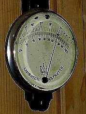
Feuchthauch das Musikholz verquollen,
gern greift der Orgler in die Vollen -
sein riesig Pfeifenladenwerk
piepst nur erbärmlich wie ein Zwerg.
Gemeinde wundert sich und zuckt,
weil Instrumentenkönig spuckt.
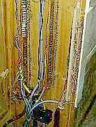
Elektropneumatik-Kontakte
fallen aus, weil Rost sie plagte.
Kondensbrüh der Stoßgebeter
dehnt und bricht das Taschenleder.
Ach der Ziegenbalg - Meck, meck!
Quietscht und klingt nach Kötteldreck.
Der Orgler weint - Ach!, was vermißt er?
Nicht eins, nicht zwei, nein 10 Register.
Anstatt der klangsatten Bachschen Töne
winselt und heult erbärmlich Gestöhne.
Und die Moral von der Geschicht -
zerheizt die Kirchenluft mir nicht!
Denn in alle kalten Teile
wächst nasser Schimmel nach ner Weile,
der dann seine Gifte pufft
immer in des Raumes Luft.
Steinmeyer, Ladegast, Silbermann -
Luftnässe macht all ihre Werke lahm.
Das freut den Restaurator sehr,
doch der Gemeinde machts Beschwer.
Und kurz nur nach der Reparatur,
beginnt von neuem die ganze Tour.
Was dagegen zu machen ist,
liest hier der Heide + der Christ. + + +
Themenlinks Orgel:
Orgelsachverständiger und -retter Oberkonservator a.D. Dr. Sixtus Lampl, Orgelzentrum Altes
Schloß Valley (mit dem ich 9 Monate als Volontär am Bayer. Landesamt für Denkmalpflege viele Probleme bei der
Erhaltung historischer Orgeln hautnah kennen lernen durfte):
lampl-orgelzentrum.com/
www.heimat-now.de/hpf_abc_orgel.htm
www.echo-online.de/kultur/template_detail.php3?id=343690
Feuchteschäden und Schimmelbefall allerorten und gottgewollt? (Beispiele mit nicht immer zutreffender
Schadensanalyse):
Orgel der Evangelisch-reformierten Kirche in Gruiten (Haan) von Schimmel befallen - Folge des falschen Heizens
www.martin-kondziella.de/Zustand/zustand.html
www.berlinonline.de/berliner-zeitung/
archiv/.bin/dump.fcgi/2000/0731/lokales/0024/
www.safer-world.org/d/lit/schmelz.htm
http://www.tagesspiegel.de/kultur/archiv/07.04.2005/1745269.asp
Dresdner Frauenkirche schimmelt schon vor der Einweihung (Leider und vorhersehbarer Weise auch danach - da mit superteurem Luftheizungssystem kaputtgeheizt!)
www.mdr.de/unterwegs/thueringen/1085538.html
www.denkmal.schleswig-holstein.de/texte/JB-02-03.rtf
home.tiscalinet.de/ekspsoll/Archiv/kirchspiel/KiOrgel.htm
Schnitger Organ of Porto, PORTUGAL SÃO Salvador de Moreira Monastery
www.eurac.edu/Press/Academia/20/art_10.htm
www.eurac.edu/websites/eurac/academia/20/academia20.pdf
www.bmbwk.gv.at/medienpool/
5993/5993_Bundesdenkmalamt.pdf
www.oberpfalznetz.de/zeitung/537468-129,1,0.html
www.walcker.com/gewalcker.de/PDF/Remerschen_Doku.pdf
www.nibelungen-kurier.de/neu/_main/
main.php3?news=archiv/19-10-2003_1065790960.nkn
www.fvv-am-scheibenberg.de/Scheibenberg/
Aktuelles/nachrichten/start?nachricht=6471
www.foer-di.de/200112/duetdat.htm
www.kirche-chemnitz.de/news.php?show=40&beitrag=858
www.trinitatis-reichenbach.de/
Kirchenmusik/kirchenmusik.html
www.elkth-hbn.de/Apostelkirche_Hildburghausen.htm
www.st-gereon-merheim.de/
berichte/2003/pfarrarchiv_01.php
kulturportal.maerkischeallgemeine.de/
cms/beitrag/10322115/71739/
www.schwalbennestorgel.de/archiv/ak000131.htm
Interessengemeinschaft Orgel und Kirchenmusik Schiltach e.V.
www.fuusgaard.dk/Sdr._Nissum_Kirke.htm
www.goart.gu.se/gioa/w-12.htm
www.viborg.stift.dk/vejledning7.htm
Im Jahre 2006 berichtet die Neue Presse Coburg aus B. zunächst sehr
ausführlich von einer kompletten und zigtausende EUR teuren Gesamtrestaurierung der berühmten Malereien an
Decke und Emporen mit biblischen Motiven aus der barocken Umbauphase der 1680 aufgestockten Kirche von
1370. Erst als sie nahezu abgeschlossen ist, entdeckt die Restauratorin schwammzerstörte Balken und sonstige
Holzteile in wesentlichen Teilen des tragenden Gebälks und Dachstuhles. Das Szenario beginnt: Aus Bericht am
16.11.2006: "Hausschwamm im Gebälk - Kirche muss geschlossen werden. Evangelische Christen in B.
müssen Weihnachten auf dem Dorfplatz feiern." Das wird freilich nicht die einzige Unanehmlichkeit für die
Kirchengemeinde bleiben. Die "unterwegs" enteckten Schäden - nach der aufwendigen Raumschalenrestaurierung -
lassen die Kostenlawine anrollen. Die eben erst restaurierten Kunstwerke müssen nun teilweise ausgebaut werden, um
den Schadensumfang aufzudecken und die Schäden an der tragenden Substanz erst mal zu beseitigen. Ob es zur
Vollvergiftung durch grausigste krebserregende Holzschutzgifte kommen wird? Ungeeignetste aber lukrativeste
Antifeuchtemittelchen wie feuchtesperrender und treibmineralverursachender Sanierputz,
fundamentbewässernde Drainage, energieverschwendende Unterputzheizleitungen und allerlei sonstiger Blödsinn
gegen die gar niemals aufsteigende Feuchte durch irrtumsbeladene Bauphysiker und
geschenkbeladene Sanierberater/Pharmavertreter der Chemoindustrie via hörigem Planer (erkennbar an
nicht gegebener Produktneutralität: "Produkt XY oder gleichwertig" als
Pseudo-Neutralitäts-Tarnfloskel im Ausschreibungstext) in den altehrwürdigen Bau gepreßt werden? Ob vielleicht auch
Kondensatfang-Folien und auffeuchtungsriskante Leichtbau-"Dämmstoffe" in das Dach hineinbugsiert werden? Ob eine sorgfältige
Voruntersuchung und Bestandsaufnahme eine kostensichere Maßnahmenausschreibung nach Einheitspreisen garantieren wird oder die
Baukosten und Planungshonorare durch Regiestundenvergabe nach oben explodieren dürfen? Sie dürfen raten! Und
ob die Schadensursachen beseitigt werden? Wir bleiben dran.
Ist das typisch? Umfangreiche Maßnahmen werden fachleute- und bauherrenseits beauftragt, ohne die
Voraussetzungen für solche Maßnahmen zu berücksichtigen: Eine Voruntersuchung der zu restaurierenden
Substanz, die diesen Namen auch verdienen würde. Eben bis in die Tiefe. Besonders tragisch: Da meistens das Dach
ausreichend dicht ist und die wahren Ursachen der Schäden an den abplatzenden und vor sich hin korrodierenden
Malschichten auf den Holzgründen und die Vermorschung der raumnahen tragenden Holzkonstruktionen nicht erkannt
sind, könnte es bald wieder vergeblich gewesen sein, was ungeheurer Restauratorenfleiß zusammenbrachte. Wird bald
alles wieder hinüber sein, was die spendenfreudige Gemeinde in die Sanierung investiert? Durch die mit Fleiß sonntäglich
erwärmten Gemeindehintern? Oha??? Hier des Rätsels Lösung: Die einst eingebaute Kirchenbankheizung im
temporären Betrieb. Sie treibt die Holzuntergründe auseinander und zusammen, sie näßt durch
sonntägliche Kondensationsauffeuchtung die ausgekühlten Balkenwerke bis zur endgültigen Vermorschung auf.
Aber diese Erkenntnis ist oft denkbar unbeliebt. Auf jeden Fall bei den Restauratoren, die sonst - bei
Gefahrenabwehr durch simpelste Temperiertechnik - mit Warmwasser-Zentralheizung oder der oft wesentlichen
günstigeren Elektro-Direktheizung (el. Inrarotheizung, IR-Strahlungsheizung, elektrische Heizkabel-Temperierung,
IR-Heizplatten-Temperierung, Infrarotwärme-/Wärmewellen-Strahlplatten-Heizung ohne jegliche Transportverluste, Kesselverluste,
Kaminverluste und unübertreffbar bei den Installationskosten) um ihre Daueraufträge gebracht würden.
Weiter 4 - Strahlungsgeschichtliches
Energiesparseite mit weiterer Aufklärung
Bauberatung - auch mit Angeboten zur Planung, Kosten und Ausführung Hüllflächentemperierung
Zur Baustoffseite - mit vielen Tips zum besseren Bauen
Altbau und Denkmalpflege Informationen Startseite

 "Zum Fegfeuer" Der etwas andere Klosterladen
"Zum Fegfeuer" Der etwas andere Klosterladen